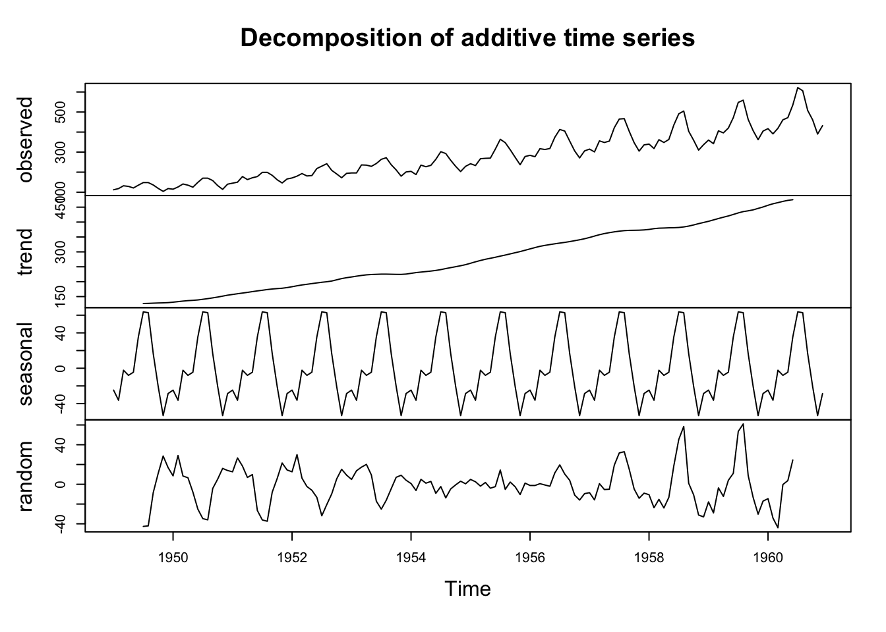

# 코드 예시
library(forecast)
data <- ts(your_data, frequency=12) # 월별 데이터
fit <- stl(data, s.window="periodic")
plot(fit) # 분해된 요인 그래프
adjusted_data <- seasadj(fit) # 계절 조정된 데이터계절 조정(Seasonal Adjustment)
R을 이용한 시계열 데이터의 계절 조정
주요 R 패키지 및 함수
- stats::decompose(): 고전적인 덧셈 또는 곱셈 분해법. decompose(ts_data, type=“multiplicative”) 형태로 사용.
- stats::stl(): Loess를 이용한 STL(Seasonal-Trend decomposition procedure based on Loess) 분해. 데이터가 시간에 따라 변하는 계절성을 다룰 때 강력하며, window 매개변수로 조정 가능.
- seasonal 패키지 (X-13ARIMA-SEATS): 미국 인구조사국에서 사용하는 표준 방식. seas() 함수를 사용하여 꼼꼼한 계절 조정 가능.
- forecast 패키지: ggseasonplot()으로 계절성을 시각화하고 stl() 등의 함수를 연동.
계절 조정 절차
- 데이터를 시계열 객체로 변환: ts() 사용하여 데이터를 시계열 객체(time series object)로 정의
- 분해(Decomposition): stl() 또는 decompose()를 사용하여 원계열을 추세(trend), 계절(seasonal), 불규칙(random) 요인으로 분해
- 계절성 제거: 원계열에서 계절 요인을 제거(계절성/계절 요인)하여 계절조정된 데이터를 산출
기타 활용 팁
- 시각화: ggseasonplot(data)를 사용하여 데이터 내 계절적 패턴을 먼저 파악
- 모델 선택: 계절 변동폭이 일정하면 덧셈법(Additive), 추세에 따라 변동폭이 커지면 곱셈법(Multiplicative) 사용
- 정확도: 7년 이상의 장기적인 데이터(월별 등)일 경우 seasonal 패키지의 X-13ARIMA 방식이 추천
예제 AirPassenger
m <- decompose(AirPassengers)
str(m)List of 6
$ x : Time-Series [1:144] from 1949 to 1961: 112 118 132 129 121 135 148 148 136 119 ...
$ seasonal: Time-Series [1:144] from 1949 to 1961: -24.75 -36.19 -2.24 -8.04 -4.51 ...
$ trend : Time-Series [1:144] from 1949 to 1961: NA NA NA NA NA ...
$ random : Time-Series [1:144] from 1949 to 1961: NA NA NA NA NA ...
$ figure : num [1:12] -24.75 -36.19 -2.24 -8.04 -4.51 ...
$ type : chr "additive"
- attr(*, "class")= chr "decomposed.ts"plot(m)